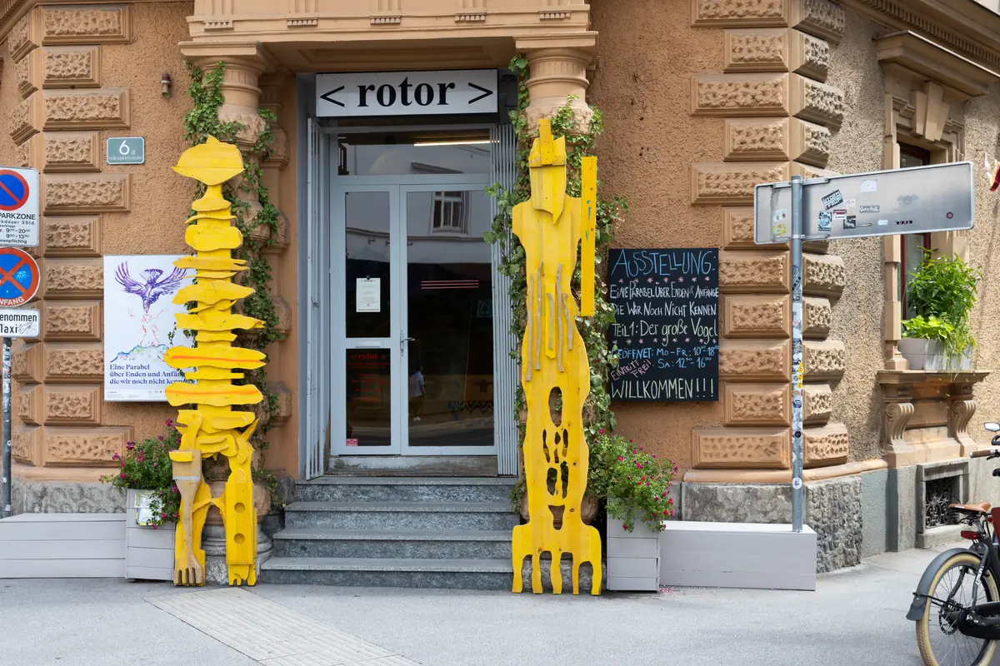
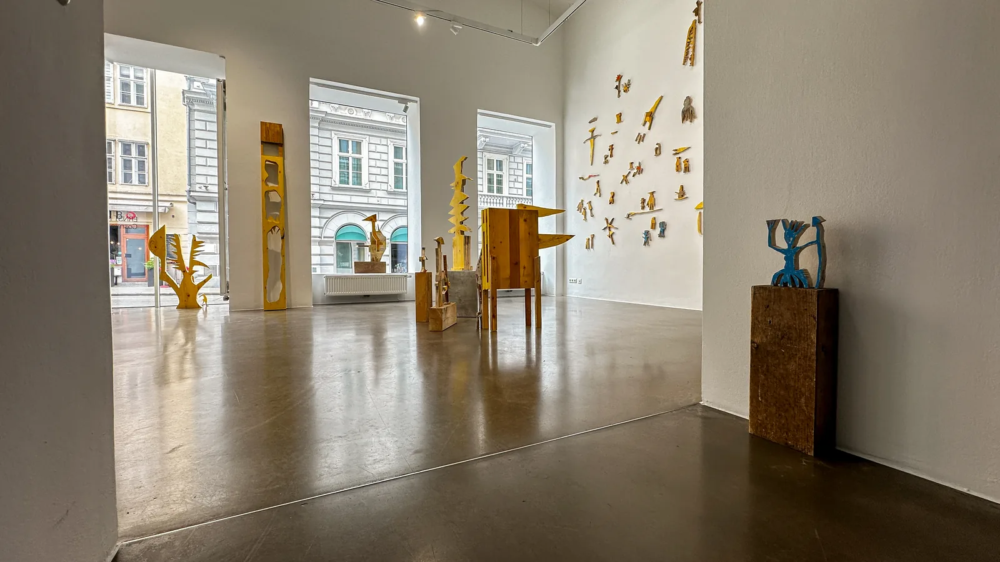
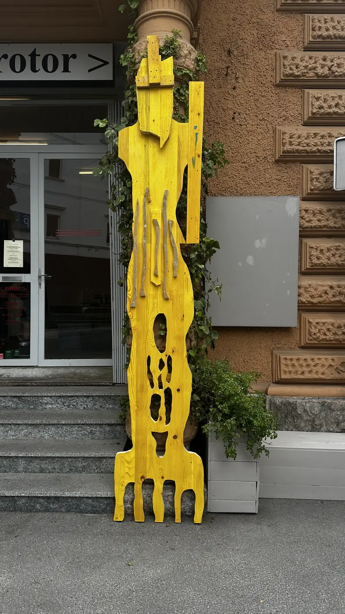
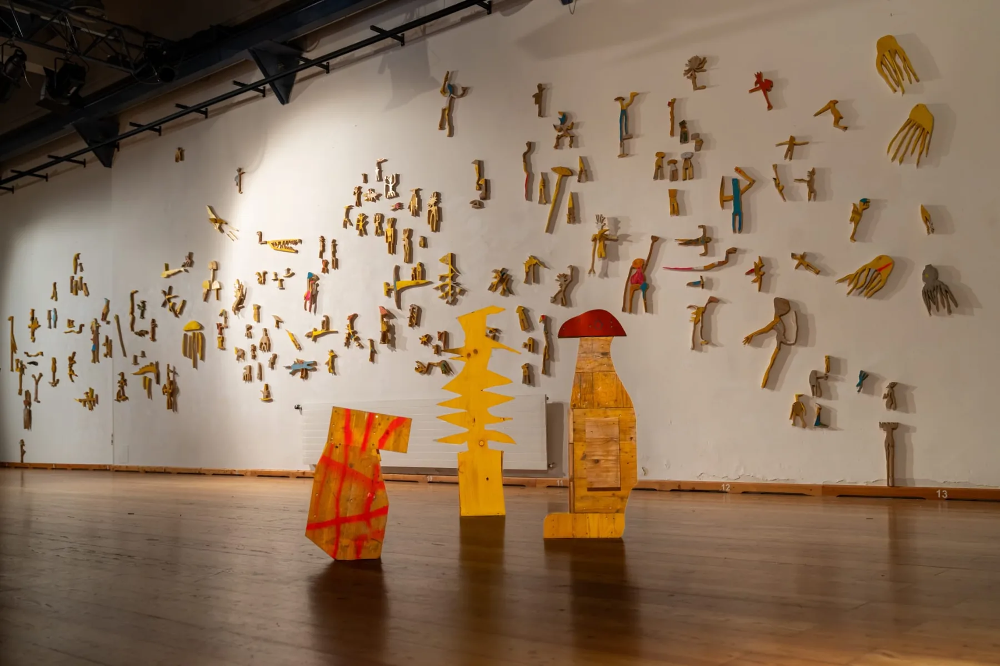
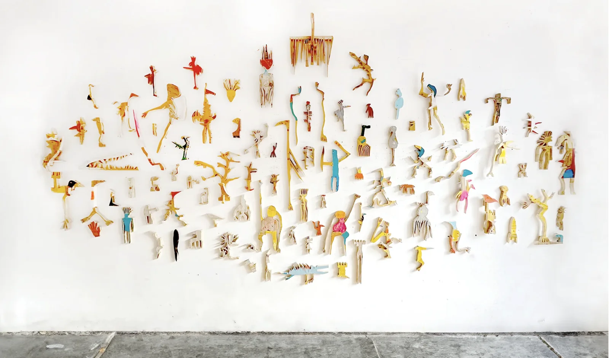
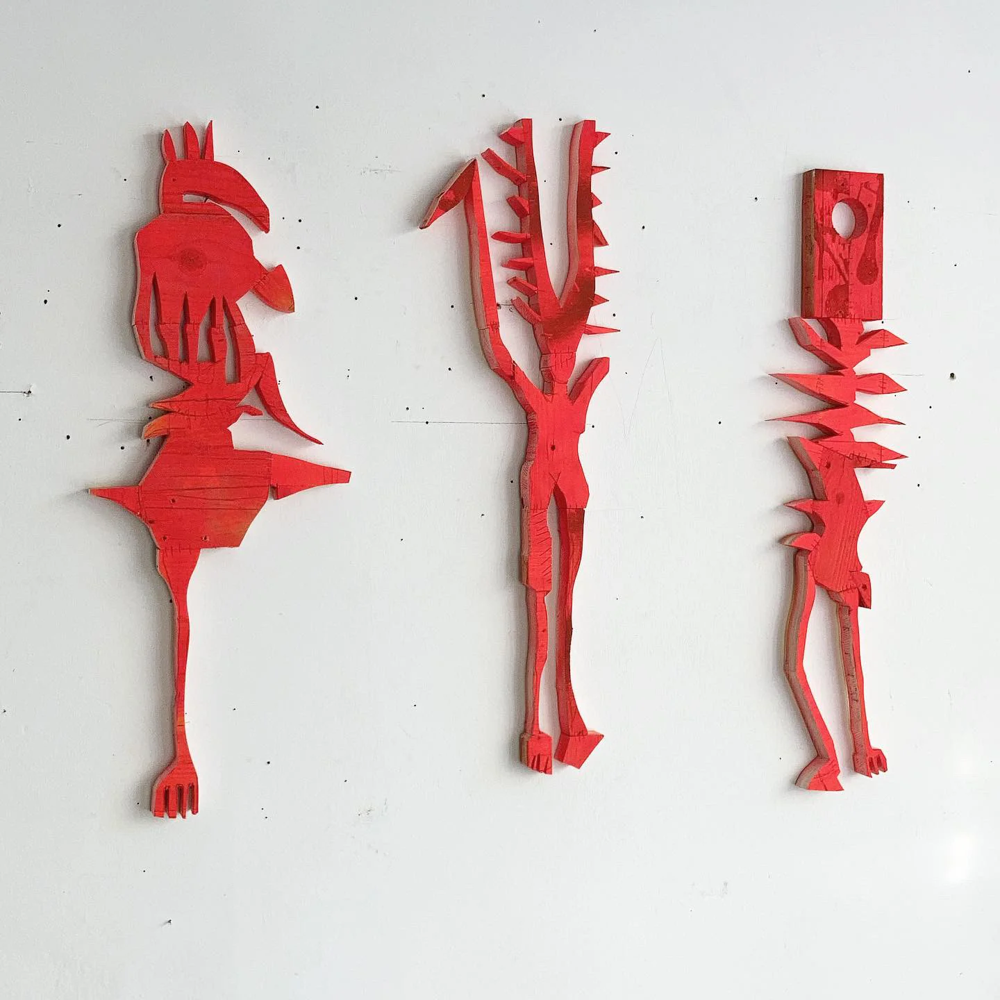

Ernst Koslitsch


Cosmic Trigger – Respawn
Bildraum 07, Vienna, curated by Katharina Hoffmann

A Parable for Endings and Beginnings We Don't Know Yet
rotor, Graz, curated by Margarethe Makovec, Anton Lederer

TRANSFER
Kulturforum Laßnitzhaus, Deutschlandsberg, curated by Anja Weisi-Michelitsch, Roman Grabner

EX-SITU
Nationalmuseum Sarajevo, curated by Margarethe Makovec, Anton Lederer for rotor Graz

Art Brussels
Brussels, with Gallery Raum mit Licht, Vienna